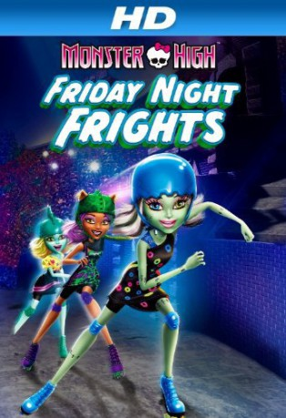

IMDB-Wertung: 7.0 / 10
IMDB-Wertung: 7.0 / 10  Metascore:
Metascore: 
When the boys can't compete in the Skulltimate Roller Maze Championships, Frankie Stein convinces her friends that some "ghoul power" is needed to save the day in this all-new movie!
 IMDB-Wertung: 7.0 / 10 Metascore:
When the boys can't compete in the Skulltimate Roller Maze Championships, Frankie Stein convinces her friends that some "ghoul power" is needed to save the day in this all-new movie!
Jahr: 2012
Dauer: 46 Minuten
FSK:
Land: Studio: Pop TVTonspuren: DTS - ,
Untertitel: Deutsch,
Auflösung: 1080p (1920x1080) Größe: 2447 MB
Genre: Animation/Trick
Regisseur: Dustin Mckenzie
Drehbuch: Mattel
Soundtrack:
Darsteller:
 Cam Clarke als Heath Burns / Romulus
Cam Clarke als Heath Burns / Romulus Debi Derryberry als Draculaura
Debi Derryberry als Draculaura Kate Higgins als Frankie Stein
Kate Higgins als Frankie SteinDatei: X:\Kinder Collections\Monster High\Monster High Wettrennen um das Schulwappen (2012, FSK, 1920x1080).mkv seit 12.06.2017
Festplatte: Kinder-Filme+Trick
 Es gibt insgesamt 12 Filme in der Gruppe 'Kinder Collections\Monster High'
Es gibt insgesamt 12 Filme in der Gruppe 'Kinder Collections\Monster High'